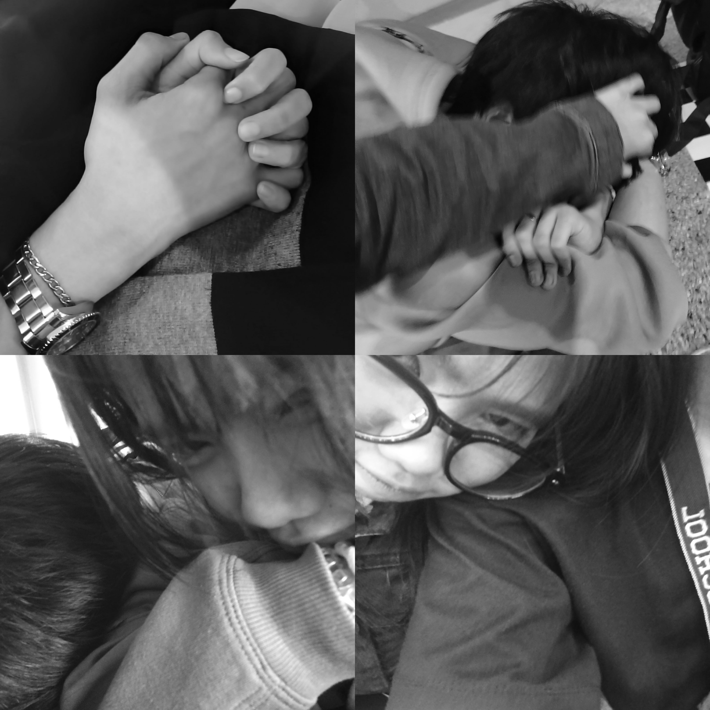
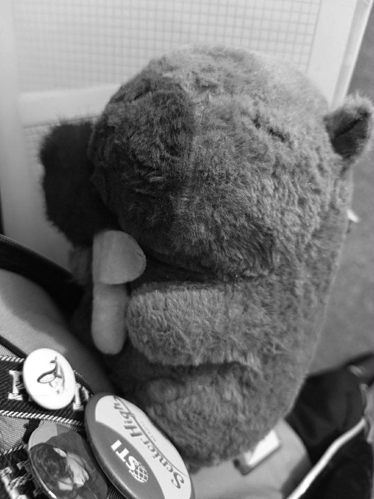

open the envelope to read the letter


a quiet journey of thirty-one days and countless feelings
one month — just thirty-one days, but somehow it already feels like a quiet journey i never want to end. every day since i started courting you, bebi, has meant something more than i can explain. from our small talks to those bursts of laughter, even the silence between us feels like peace. everything with you feels natural — soft, real, and light. maybe because it’s you.
i never imagined that someone could make me look forward to every sunrise the way you do. every time i talk to you, it’s like the world slows down — as if everything around me fades just to make space for your voice. your words calm me, your smile brings warmth, and your thoughts make me see things in a new way. i catch myself smiling for no reason, replaying your words in my head, remembering how it feels when you make me laugh.
you’ve taught me what patience truly is — not the kind that waits because it has to, but the kind that waits because it wants to. because you’re worth it. i’m learning to move slow, to build something honest, something that doesn’t crumble when tested. i don’t want to rush your heart, bebi. i just want you to feel that i’m here — steady, real, and never going anywhere.
and i want to say this, too — just because you’ve shown me that i have a chance doesn’t mean i’ll stop trying. it doesn’t mean i’ll take it for granted or lose the effort i’ve started with. the more i see you opening up, the more i’ll prove that i deserve the trust you give me. i won’t ever let the effort fade. i don’t want to be the kind of man who stops showing how much someone means to him just because he feels secure. love, for me, isn’t about reaching a finish line — it’s about showing up every single day, no matter what.
i know people say that “there’s always another girl” out there — but i don’t want another. i want you. because it’s rare to meet someone who makes you feel calm just by being there, someone who makes the world feel softer just by existing. you’re the kind of person that makes all the noise quiet down. i don’t care about what others say; i care about how you make me feel — genuine, grounded, and alive.
and i know i have a past — i’ve made mistakes, i’ve done things i’m not proud of. yes, i have a history of cheating, and that’s something i can never erase. but what i can do is make sure it never happens again. i learned the hardest way that hurting someone’s trust doesn’t just break them — it breaks you too. i won’t ever let that version of me come back. because you, bebi, deserve the kind of love that is pure, loyal, and unwavering. and i promise that’s what i’ll give — not words, but proof, through time and consistency.
you’re beautiful, bebi — not the kind of beauty that needs filters, not the kind that hides behind makeup. you’re beautiful just by being yourself — your bare face, your natural smile, the softness in your eyes. it’s a kind of beauty that doesn’t fade even when everything else does. you’re the kind of pretty that feels real — the kind that makes people stop and feel something without even knowing why.
i know i’m still just your suitor, but what i feel for you isn’t simple or shallow. it’s something that grows quietly but deeply, something that’s built on sincerity and hope. i’m not here to impress you with grand gestures — i’m here to stay, to show up with honesty, to give the kind of love that’s gentle but strong. because when something’s true, it doesn’t need to be rushed. it just needs to be kept.
this one month may seem short, but for me, it already carries memories i’ll hold onto — your laughter, your words, the way you listen, the comfort you bring without even trying. and as time passes, i’ll keep choosing you — in every version of me, through every season we face, with patience and care.
so here’s to our first month, bebi — a month of learning, of waiting, of quiet growth and understanding. thank you for letting me stay, for letting me care, for giving me the chance to be better than who i was before. i don’t know what the future holds, but one thing i’m sure of — as long as you’ll let me, i’ll keep proving that my intentions are real, my heart is faithful, and my love will always remain.
because i don’t want to lose you, bebi. not to mistakes, not to pride, not to fear. you’re too precious to ever risk. and i promise — this time, i’m all in, for real.